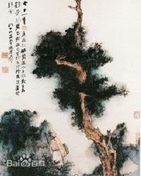
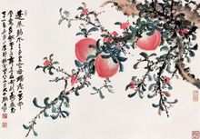
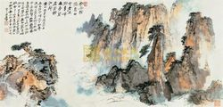
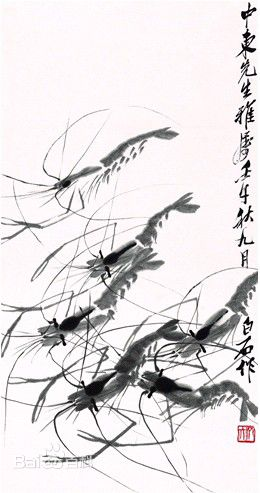
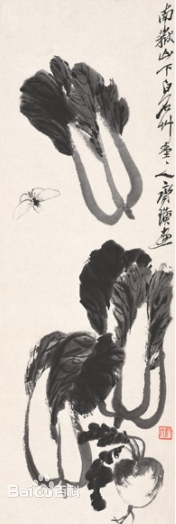
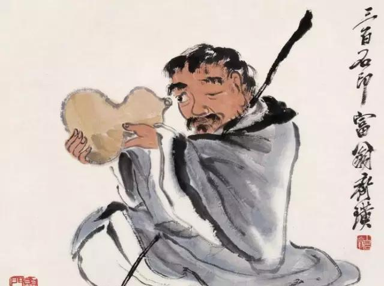

|
|
张大千作品 |
|  |
乔木高士
一九八二年，八十四岁高龄的张大千仍然作画不止，此图为张大千带病绘之。在简笔淡墨的山石上以花青重染，色调清新淡雅，遒劲苍老的乔木却茂然有生气；一持杖高士仰望乔木，似对生命几何若有感悟。从此图也可看出大千晚年对自己人生的思考。 |
|
|  |
寿桃 镜心
此画为张大千1982年所作，作品尺寸：73*104cm，钤印：西川张爰（白）金石同寿（朱）摩耶精舍（朱）以介眉寿（朱）。 |
|
|  |
黄山文笔峰
此画为张大千八十三岁高龄时忆游黄山之作，自题“以渐江、苦瓜两尊者法写此”。老笔纵横，苍劲有力，以赭色浓重施于山体阳面，多以皴擦为之，山脚染以花青润泽，更见黄山之奇和笔墨的老辣。大千晚年的系列忆游作品在简化具体真景的同时更以己意为之，气质淳化而兼具苍深浑穆。 |
|
| |
齐白石作品 |
|  |
墨虾
齐白石的《墨虾》是黄达聪先生珍藏之佳品。作为齐白石成熟期的水族作品，此作未写水纹也没有画水草烘托陪衬，齐白石仅以娴熟的笔墨技法，结合独创的濡墨蘸水，便从容写出虾的结构、动态和透明的质感。齐白石将青虾长钳造型的美和白虾躯体透明的美以“接木移花手段”(白石印文)融合一体，创构出“白石虾”，在虾头之上，趁淡墨未干之际，点浓墨少许，使其周围形成自然晕染，墨色浓淡相间；再用淡墨掷笔，绘成躯体，浸润之色，更显虾体晶莹剔透之感。 |
|
|  |
白菜萝卜
清白传家”是齐白石画白菜的常用标题。齐白石生于“糠菜半年粮”的穷人世家，独以白菜为菜之王，念念不忘“先人三代咬其根”，认为“菜根香处最相思”，常以青白菜谐“清白”之音。一生喜画白菜，并以自己画面洋溢的“蔬笋气”为荣。老人以自身的丰富阅历劝导着后辈做人处事朴厚的价值取向。 |
|
|  |
铁拐李
铁拐李，是汉族民间传说及道教中的八仙之首，精专于药理，并炼得专治风湿骨痛之药膏，恩泽乡里，普救众生，深得百姓拥戴，被封“药王”。铁拐李也是白石老人最喜爱的人物题材之一。他依照民间传说塑造铁拐李形象：垢面蓬头、手执铁拐，肩串葫芦，亦丐亦仙。但不同姿神配上不同题跋的铁拐李，总能表达不尽相同的寓意。 |
|